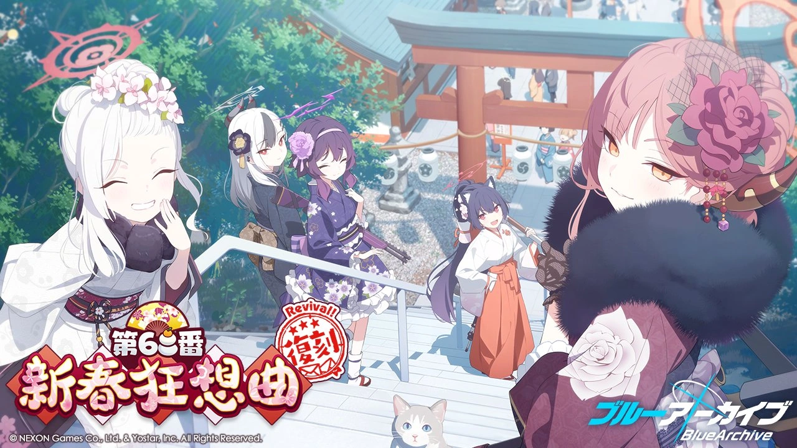
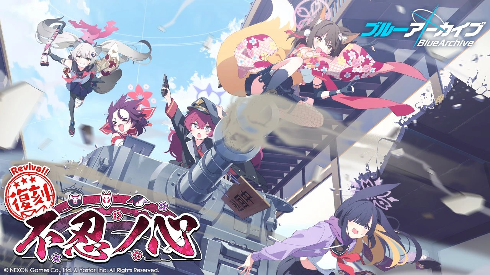
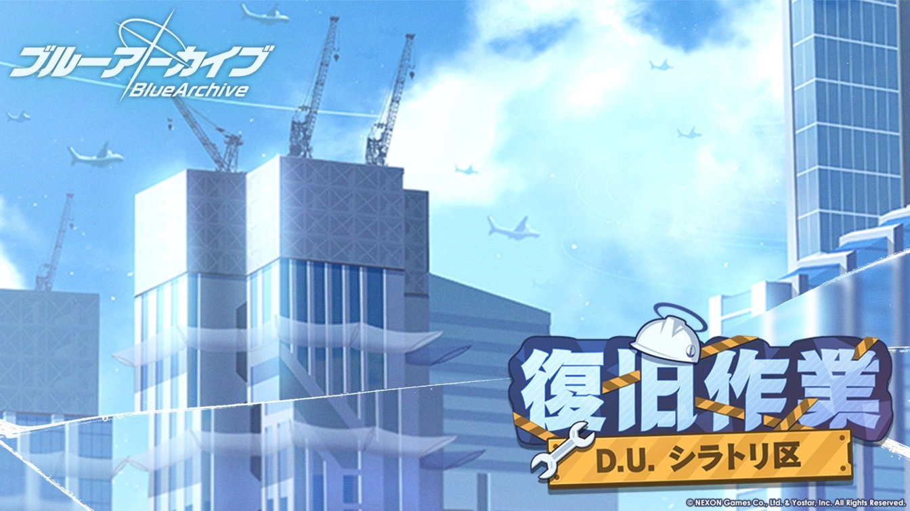

Blue Archive Events

Duration: April 12th, 2023 11:00 JST ~ April 19th, 2023 11:00 JST
Event Title: An Unconcealed Heart
Fandom Link

Duration: March 22nd, 2023 After MT JST ~ April 05th, 2023 12:00 JST
Event Title: Handyman 68's New Year Rhapsody
Fandom Link

Duration: March 12th, 2023 AT Main JST ~ March 22th, 2023 11:00 JST
Event Title: D.U. Shiratori Ward Restoration Work
Fandom Link